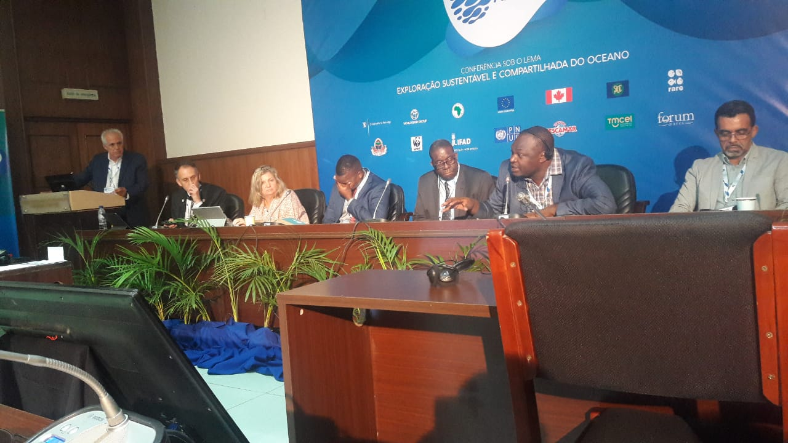
Participação na Conferência "Crescendo Azul" Nov. 25, 2019, 3:36 p.m.
A NATURA participou na conferência internacional "Crescendo Azul" realizada em Maputo de 23 a 24 de Maio de 2019. O stand expondo as atividades e projetos da Associação, despertou muito interesse e foi objeto da visita dos Presidentes da República de Moçam
Ler mais
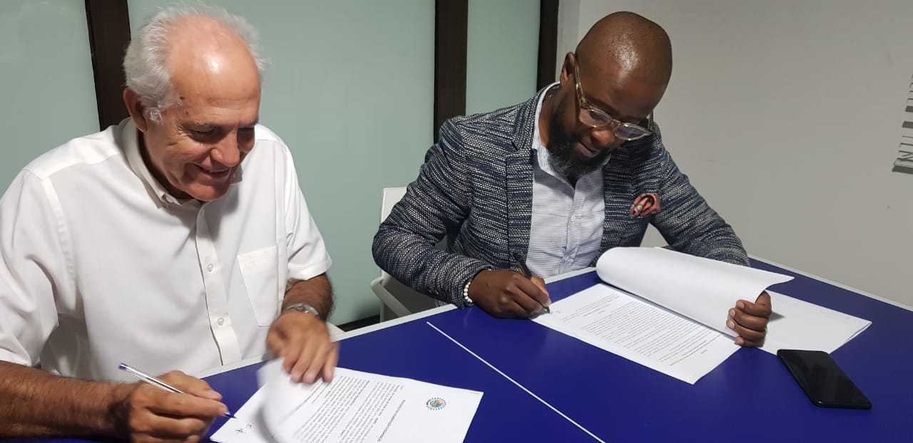
Parceria com ADAPO Nov. 25, 2019, 9:13 a.m.
A Associação Natura procedeu com a assinatura de um protocolo de colaboração e cooperação com Associação dos Amigos da Ponta de Ouro ADAPO, com vista a coordenar ações de manutenção de um ambiente limpo e saudá
Ler mais

Parceria com AVM consultores Nov. 25, 2019, 3:35 p.m.
No dia 28 de Agosto a NATURA assinou um importante Protocolo de Colaboração com AVM Consultores, LDA. em que se estabelecem os termos e condições em que esta entidade participa e co-financia através da NATURA uma importante expedição cientí
Ler mais
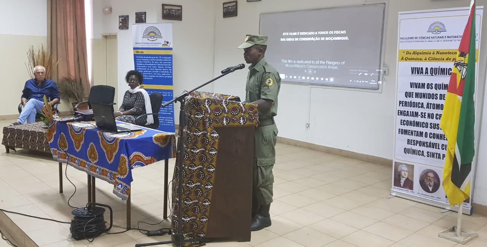
Projeção do filme “NA LINHA DA FRENTE”. Nov. 25, 2019, 3:35 p.m.
Por ocasião da realização das Jornadas Científicas na FCNM da UP Maputo, foi projetado naquela Faculdade, em duas sessões, o filme NA LINHA DA FRENTE que relata o processo de formação dos fiscais do Parque Nacional da Gorongosa e os desafios que enfre
Ler mais
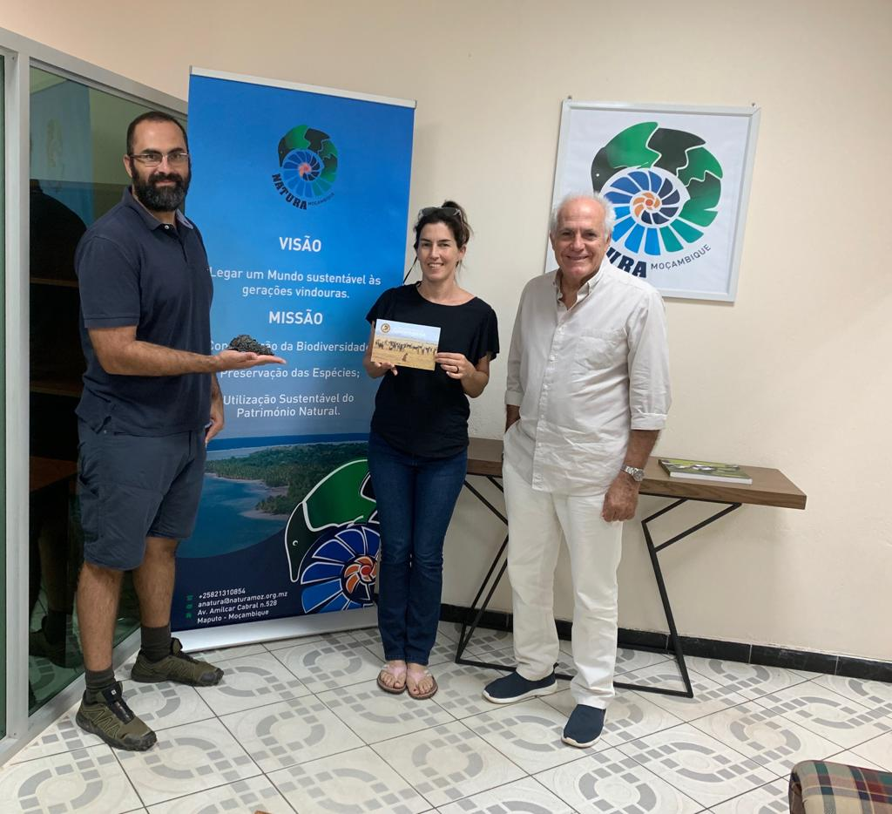
Visita de Directores do Parque Nacional da Gorongosa Nov. 25, 2019, 3:35 p.m.
No dia 23 do mês de Agosto a Associação NATURA teve a honra de receber na sua sede o Dr. Rui Branco e a Dra. Paola Bouley, respetivamente o Director do Departamento de Conservação do Parque Nacional de Gorongosa e a Directora associada do mesmo Departamento e r
Ler mais
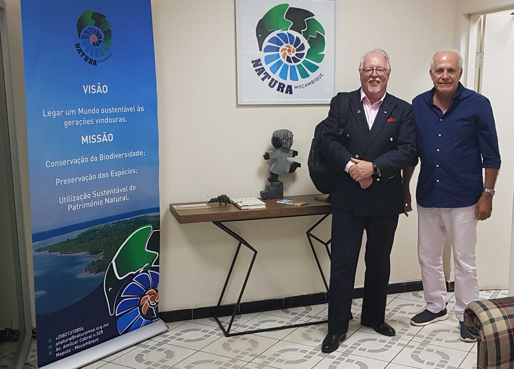
Visita do Director da WIORI - Hugh Brown Nov. 25, 2019, 3:35 p.m.
A 08 de Agosto de 2019 decorreu um encontro no escritório da Associação NATURA que juntou o Director da NATURA (António Branco) e o Director da WIORI (Hugh Brown), instituição de pesquisa marinha que conjuntamente com a NATURA e em parceria com a Univer
Ler mais
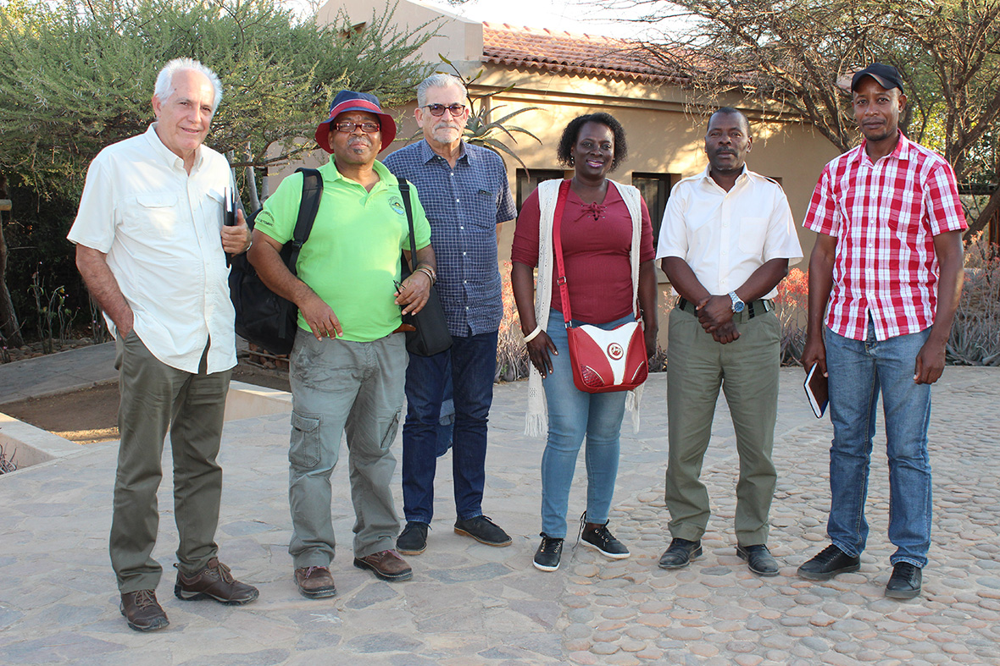
Visita ao Parque Nacional de Limpopo Nov. 26, 2019, 2:35 p.m.
No dia 17 de Julho a Associação NATURA e a Delegação da Universidade Pedagógica de Maputo efectuaram uma visita ao Parque Nacional de Limpopo com vista ao reconhecimento da área onde será implantada uma Estação Biológica da UP Map
Ler mais
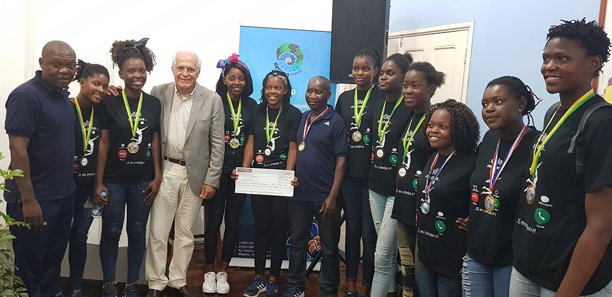
Premiação das Campeãs do Voleibol da UP Maputo Nov. 25, 2019, 3:34 p.m.
No âmbito do relacionamento institucional com a UP Maputo, a NATURA, em parceria com a AVM Consultores, participaram no dia 08 de Outubro num evento muito concorrido, organizado pela UP Maputo e presidido pelo magnífico Reitor, Professor Jorge Ferrão, em homenagem ao Profes
Ler mais
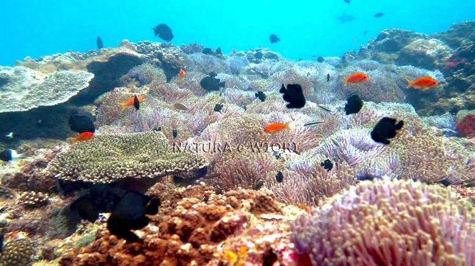
Fim da Expedição marinha entre o Pomene e o Cabo de S. Sebastião Nov. 26, 2019, 9:26 a.m.
Ao longo de 25 dias em que a equipa de pesquisadores realizou cerca de 30 mergulhos e recolheu milhares de dados e registos em todas as principais estruturas coralíferas na faixa marinha objeto da pesquisa, terminou a fase de campo deste inédito programa de investigação m
Ler mais
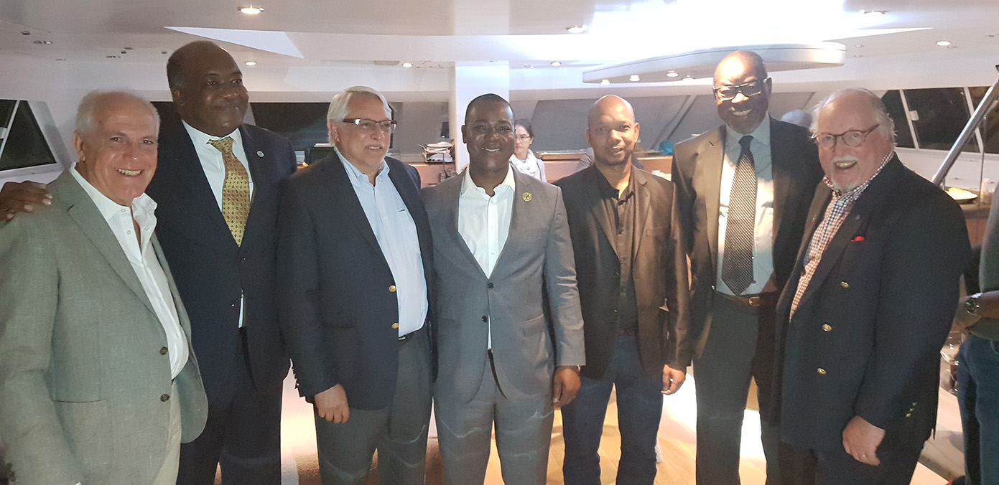
Recepção por ocasião da realização da expedição científica marinha Pomene - S. Sebastião Nov. 26, 2019, 9:20 a.m.
No dia 9 de Setembro realizou-se a bordo do Catamaran HQ2, no Porto de Pesca de Maputo, a convite do Reitor da UP Maputo, uma recepção que contou com a presença da Doutora Benvinda Levi, do Director Geral da ANAC, altos representantes do Ministério do Mar, &Aacu
Ler mais
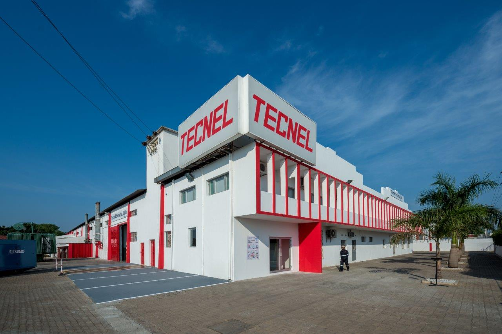
Assinatura do Protocolo de Colaboração entre a NATURA e a TECNEL SERVICE Dec. 5, 2019, 10:55 a.m.
Foi assinado a 4 de Dezembro de 2019 um Protocolo de Colaboração entre a NATURA e a TECNEL SERVICE, através do qual esta empresa, que no âmbito dos seus programas de responsabilidade social atribui especial atenção ao apoio a entidades e programas ligados &ag
Ler mais
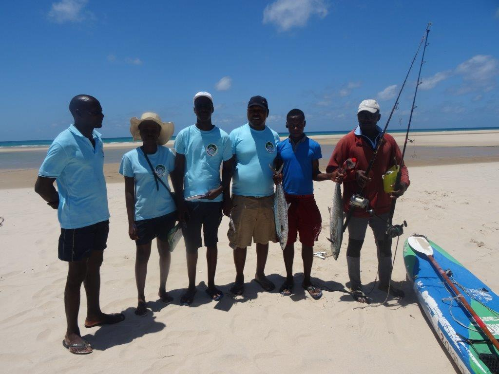
Inquérito sobre Pesca Artesanal Pomene – Malamba Dec. 6, 2019, 9:29 a.m.
De 25 a 30 de Novembro uma equipa de inquiridores da NATURA realizou um exaustivo inquérito sobre a actividade de pesca artesanal na faixa Pomene - Malamba, em complemento da expedição científica marinha realizada entre o Pomene e o farol do Cabo de S. Sebastião de
Ler mais
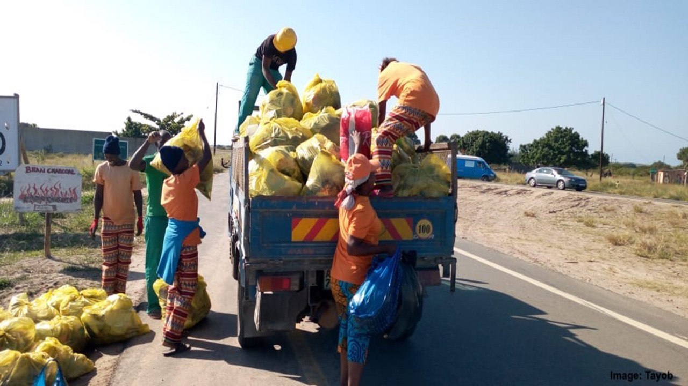
Assinatura do aditamento entre a NATURA e Suzan Steyn Dec. 9, 2019, 10:04 a.m.
A NATURA irá de novo apoiar em 2020 o projeto Keep Ponta Clean, aumentando a sua contribuição relativamente a 2019.
Os resultados em termos de limpeza das principais vias de circulação e da praia da Ponta do Ouro que este projeto criado e dirigido por Suzan Anne
Ler mais